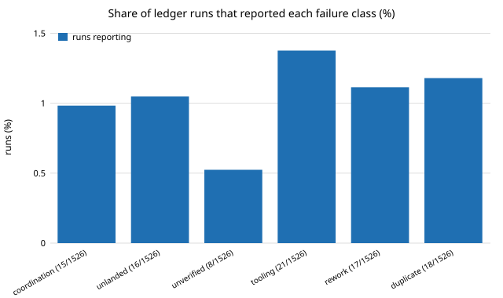

Which practices of engineering organisations that ship could help an agent loop, and what is there to fix?
research/swe-orgs
Which practices of engineering organisations that ship could help an agent loop? A cited catalogue of 47 practices from 46 sources (batch 14 adds Reason and Vaughan on organisational accidents; batch 13 adds Rigby and Bird on lightweight review, Humble and Farley's deployment pipeline and Beck's Extreme Programming), scored against the 758-run ledger: no new proposal clears a 5% ceiling (negative, preliminary). Ongoing, with a research log; track 10, milestone 7.
7 tests
What it found
A cited, growing catalogue of 51 practices from 50 sources (Perrow on normal accidents, the DevOps Handbook, Reason on layered defences, Vaughan on normalization of deviance, Rigby and Bird, Humble and Farley, Beck, Allspaw and Hammond on Flickr, Parnas, Nygard, Conway, Nagappan et al., Skelton and Pais, Brooks, Fowler, Reinertsen, Toyota, the Rogers Commission, 37signals, Instagram, Google, Microsoft, Facebook, Netflix, Amazon, Etsy, Basecamp, Spotify, Stripe (twice, including its online-migrations post), Shopify, Linear, and postmortems from GitLab and Cloudflare, the SEC’s order on Knight Capital and others), each tagged with company stage, evidence type (four measured, the rest case studies, postmortems, accounts or opinion), the loop element it maps to, how far it transfers to a fleet of agent sessions, and the assumption that does not carry over. The failure reports agree: a safety mechanism or a cost nobody measured before it shipped. Scored against the 758-row run ledger, the failure classes runs report are small (1.1–2.5% of runs, self-reported keyword matches), so no practice clears the 5% ceiling as a new proposal: a negative result. Sources were checked by web search only. Thirteenth batch of standing milestone 7 of track 10; the research log below records each batch.
A figure from its own output

swe-orgs/experiments/failure_classes.svg, written by the project's own experiment code.
Research log
Ongoing: each run adds a batch and an entry, newest first. Source: LOG.md.
2026-10-17 · Batch 15: normal accidents and the DevOps Handbook
Added 2 sources and 2 practices (51 practices, 50 sources): Perrow's Normal Accidents (1984; P50) and Kim, Humble, Debois and Willis's The DevOps Handbook (2016; P51). P50 completes a trio with batch 14: Reason on layered defences, Vaughan on eroding checks, Perrow on why tightly coupled, complex systems fail even when every layer works.
P50 transfers partial and is partly adopted: one project per pull request and per-project directories loosen the coupling, but README.md, projects.json and the generated mirror stay shared, tightly coupled files. P51 is yes and adopted: landing is flow, CI and run records are feedback, the review track is learning. It is a framing, not a new change.
Still no proposal. The ledger has 905 rows (it had 762); every class share fell again (tooling 2.1%). The highest unadopted yes row is P23 at 2.1%, below the 5% bar.
Verification was by web search only (blog summaries for Perrow, the publisher page for the Handbook); neither book was read and no figure from either is used. Both batches 14 and 15 are theory and practitioner books, not measurements: the catalogue's measured count stays at 4.
2026-10-17 · Batch 14: layered defences and normalization of deviance
Added 2 sources and 2 practices (49 practices, 48 sources): Reason's Managing the Risks of Organizational Accidents (1997; P48) and Vaughan's The Challenger Launch Decision (1996; P49). Both extend P33 (Feynman) from "a safety check nobody confirmed" to how checks fail together or erode.
Both transfer partial and are partly adopted. P48: CI, cross-review and run records are separate layers, but a model reviewer from the same family as the author may share its blind spots, so the holes may line up; nothing measures that overlap. P49: run records log deviations, but no check re-tests a gate that was loosened once. They rank 1.2% and 0.5%.
Still no proposal. The ledger has 762 rows (it had 758); the highest unadopted yes row is P23 at 2.5%, below the 5% bar.
Verification was by web search only (publisher, library and review pages); neither book was read, no figure from either is used, and the Vaughan url is a Publishers Weekly page.
2026-10-17 · Batch 13: lightweight review, the deployment pipeline and Extreme Programming
Added 3 sources and 3 practices (47 practices, 46 sources): Rigby and Bird's Convergent contemporary software peer review practices (ESEC/FSE 2013; P45, the catalogue's fourth measured row), Humble and Farley's Continuous Delivery (2010; P46) and Beck's Extreme Programming Explained (1999; P47, the first late-1990s small-team source).
P46 ties the top of the ranking and is partly adopted: CI runs on every pull request, but when runners are starved a session runs a hand-picked checklist instead, so not every change takes one path. It targets tooling (2.5% of 758 runs), the same bar as P23, P36 and P43. P45 and P47 transfer partial and rank 0.7%: a model reviewer shares the author's blind spots, which a study of people reading each other's code cannot speak to, and a session has no memory for a flat cost of change to rely on.
Still no proposal. The ledger has 758 rows (it had 751). No unadopted yes row reaches the 5% bar; the highest, P23, is 2.5%.
Verification was by web search only. Rigby and Bird's DOI was not found and the paper was not read, so the row states only its scope. The Humble and Farley row uses the pipeline definition and no page count (catalogues disagree). Search returned nothing on Beck's specific practices (small releases, test-first), so P47 states only the cost-of-change claim.
2026-10-17 · Batch 12: Segment's return to one codebase
Added 1 source and 1 practice (44 practices, 43 sources): Segment's 2018 move from microservices back to one codebase (P44), from the engineering blog post, Noonan's QCon London talk and Changelog #312. Written in parallel with batch 11 above, which landed first; this adds only what it lacked.
P44 is adopted (partial transfer): the portfolio is one repository and research was merged in on 2026-10-16. Segment's cost was people running many services; agents are not on call, so the remaining cost of one repository is the shared files (README.md, projects.json). Ledger shares are unchanged from batch 11; no proposal clears the 5% bar.
Verification was by web search only. The post itself was not found, so its author is unconfirmed, no figure from it is used, and the url is the Changelog episode page.
2026-10-17 · Batch 11: Flickr's ten deploys a day, Parnas on modules and Nygard's circuit breaker
Added 3 sources and 3 practices (43 practices, 42 sources): Allspaw and Hammond's Velocity 2009 talk on Flickr (P41), Parnas's On the Criteria To Be Used in Decomposing Systems into Modules (1972; P42) and Nygard's Release It! (2007; P43).
P43 is the only new yes row, and it is partly adopted. A stop rule on retries exists for CI (a second failure is real) and for git push (four tries), but nothing tells a session to stop after repeated proxy 403s or to cap a suite's runtime. It targets the tooling class, the largest at 2.5%. P41 (one-step release, a log of what shipped) is partial: merge on green CI and git history already do it. P42 maps to the same shared files P38 and P40 did: a generator owning README.md and projects.json entries would hide their format from each run.
Still no proposal. The ledger has 751 rows (it had 559; its error text did not grow much, so every class share fell, tooling from 3.4% to 2.5%). The highest unadopted yes row is P23 at 2.5%, below the 5% bar; P43 ties it at 2.5% but is already partly adopted. The ledger grew faster than reported errors, which may mean fewer errors per run or runs that stopped writing them; the keyword classes cannot tell.
Verification was by web search only; none of the three works was fetched or read. The Flickr row uses no deploy count beyond the talk's title. The Parnas DOI and pages come from search summaries. The Nygard year is the first edition's, and the pragprog url is inferred.
2026-10-16 · Batch 10: Conway's law, Microsoft's organisation-and-quality study and Team Topologies
Added 3 sources and 3 practices (40 practices, 39 sources), all on how team structure shapes the system: Conway's How Do Committees Invent? (1968; P38), Nagappan, Murphy and Basili's study of organisational structure and failures in Windows Vista (ICSE 2008; P39) and Skelton and Pais's Team Topologies (2019; P40). P39 is the catalogue's third measured row.
All three transfer only in part. Each is about people who must talk to agree on an interface, and sessions never talk. The analogue is the set of files a run edits: README.md and _homepage/projects.json are shared by every research run, the known collision points. P38 and P39 are not adopted; P40 is partly adopted (tracks are stream-aligned, the review and process tracks enable the rest).
Still no proposal. The ledger has 559 rows (it had 546). The highest unadopted yes row is still P23 at 3.4%, below the 5% bar; the new rows rank at 1.0% (P38, P40, coordination, partial) and 0.9% (P39, rework, partial).
Verification was by web search only; no page was fetched. Conway's url is inferred and one result gives the issue as 5, not 4. The Nagappan row states only the general finding and no figure, since the paper was not read. The Team Topologies row rests on Fowler's bliki and practitioner summaries and its url is inferred.
2026-10-16 · Batch 9: Brooks on headcount, Fowler on continuous integration and Reinertsen on flow
Added 3 sources and 3 practices (37 practices, 36 sources): Brooks's The Mythical Man-Month (1975; P35), Fowler's Continuous Integration (2006; P36) and Reinertsen's The Principles of Product Development Flow (2009; P37). The first two are classics the catalogue lacked; the third is the closest to the swe-schedule milestone, since it treats queues, batch size and work in process as economic variables.
P36 is already how this loop works (merge when CI is green, fix forward), so it is adopted; 'daily' is slow for a session that lives one run. P35 is partly adopted: claim-before-build and one project per pull request limit collisions, but nothing caps how many runs start together, which is the question swe-schedule is to measure. P37 is partly adopted: small batches are enforced, a limit on runs in flight and a cost-of-delay ranking are not.
Still no proposal. The ledger has 546 rows (it had 541). The highest unadopted yes row is still P23 at 3.5%, below the 5% bar; the new rows rank at 1.0% (P35, coordination, partial) and 0.7% (P37, unlanded, partial).
README counts corrected. The transfer split in the README was stale; the CSV has 14 yes, 21 partial and 2 no (it said 11, 15 and 2).
Verification was by web search only, from secondary summaries; no page was fetched. The Brooks row does not use the communication-paths formula, which no result confirmed. The Fowler row uses only the definition and section headings. The Reinertsen row uses no figure: the cost-of-delay statistics quoted by summaries disagree. The Brooks and Reinertsen urls are a Wikipedia page and a book listing, not the works.
2026-10-16 · Batch 8: a chaos-testing tool, a shuttle-disaster appendix and a hygiene checklist
Added 3 sources and 3 practices (34 practices, 33 sources), the first from outside the web-software mainstream and the first aerospace source: Netflix's Chaos Monkey release (2012; P32), Feynman's Appendix F to the Rogers Commission report on Challenger (1986; P33) and Spolsky's The Joel Test (2000; P34).
P33 is the most relevant to this loop. Feynman found engineers estimated failure odds near 1 in 100 while management said about 1 in 100,000, and that flight-readiness criteria grew less strict over time. The analogue here is a gate that quietly loosens. Marked partly adopted: the integrity rules and swe-audit re-runs exist, but nothing checks that a gate has not drifted. It targets the unverified class (1.5%), so its ceiling is small.
P32 (fail on purpose) is a relative of the red-team track, which seeds faults to measure test catch rate, so it is not adopted as such but partly covered. P34 is a self-scored checklist with no outcome data; the build and verification block already play its role.
Still no proposal. The ledger has 541 rows (it had 499). The highest unadopted yes row is P23 at 3.5%, below the 5% bar. Every class fell slightly again.
Verification was by web search only. Netflix's post was not fetched and its URL is inferred. The Feynman figures come from result summaries, not the text. The Joel Test's twelve items vary between copies, so only items common to all summaries are used.
2026-10-16 · Batch 7: three early-stage sources on doing less
Added 3 sources and 3 practices (31 practices, 30 sources), all from small teams, the side batch 6 and the README's next steps called thin: McKinley's Choose Boring Technology (P29), Fried and Hansson's Getting Real from 37signals (P30) and the Instagram team's "do the simple thing first" (P31).
All three say do less, and the loop already mostly does. P30 (cut features, never quality) is adopted: prompt.md puts quality before volume and keeps a project small enough to merge in one run. P29 is partly adopted (research projects are standard-library Python). P31 is partly adopted; nothing tells a run to start with the simplest version, and a session has no memory, so a simple first version needs a README that says what it left out.
Still no proposal. The ledger has 499 rows (it had 495). The highest unadopted yes row is still P23 at 3.8%, below the 5% bar. P29 targets tooling (3.8%) at half weight, a 1.9% priority.
Verification was by web search only, from secondary summaries. McKinley's essay was not located, so the row uses no figure from it. Getting Real was not read and its 2006 year was not confirmed in the results. The Instagram row rests on one summary of their five-year retrospective; the original post was not found.
2026-10-16 · Batch 6: a testing post, Google's large-scale changes and Toyota's stop-the-line rule
Added 3 sources and 3 practices (28 practices, 27 sources): Wacker's Just Say No to More End-to-End Tests (Google, 2015; P26), Winters, Manshreck and Wright's Software Engineering at Google (2020; P27) and Ohno's Toyota Production System (1988 English edition; P28). The catalogue's first manufacturing source, which is the track's own field.
P28 (anyone may stop the line) is already how this loop works: a red CI check blocks the merge and a failing test is never skipped. Marked adopted. The difference that matters: a stopped line idles people, a stopped session only spends budget.
P27 is partly adopted. The venture side has regen.mjs and sync_tree_counts.py, which rewrite shared files after a merge. research/ has only _homepage/build.py, which fails on a mismatch and does not fix it, so every research run still hand-edits README.md and projects.json. Coordination is 2.2% of 495 runs (Wilson 1.2 to 3.9%), so the ceiling is small.
P26 transfers in part and targets the tooling class (3.8%), alongside P19 (a runtime budget per suite). Neither clears the 5% bar.
Still no proposal. The ledger has 495 rows (it had 480); the highest unadopted yes row is still P23 at 3.8%.
Verification was by web search only; none of the three pages was fetched. Wacker's post is often quoted with a 70/20/10 split, which no search result attributed to him, so the catalogue does not use it. The Winters chapter on large-scale changes was not located, so P27 is stated in general terms. Ohno's andon and jidoka rest on a vendor's secondary page, with no page numbers used.
2026-10-16 · Batch 5: reversible migrations, a boundary checker's retrospective and a no-backlog rule
Added 2 sources and 3 practices (25 practices, 24 sources): Xu's Online migrations at scale (Stripe, 2017; P23), McGibbon and Salzberg's A Packwerk Retrospective (Shopify, 2024; P24), and a third practice from Basecamp's Shape Up that the catalogue had not yet taken, no backlog (P25, source S8).
P23 is the highest-ranked new row and the first to top the old leaders: migrate in stages (write both, backfill, switch reads, switch writes, delete the old data last). It targets the tooling class (4.0% of 480 runs, Wilson 2.5 to 6.1%), and it describes what went wrong when the run ledger moved from prompts/runs.jsonl to prompts/runs/ and swe-orgs/run.py crashed (batch 4). It transfers as yes, with priority 4.0%, still below the 5% bar for a proposal. The tooling class is a keyword match including bug and missing, so the ceiling probably overstates it.
P24 is partly adopted._homepage/build.py fails when a project is missing from README.md or projects.json, a boundary check of a kind. Shopify's point that boundaries kept by agreement alone get broken fits, but the collision point here is the shared index files, which a directory check does not touch.
P25 is partly adopted (CLAUDE.md tells runs not to maintain admin queues), but PROJECTS.md milestones are a standing list that sessions, which have no memory, need.
Still no proposal. The ledger has 480 rows (it had 474); every failure class moved by under 0.2 points.
Verification was by web search only, from excerpts and secondary write-ups. Neither new page was fetched. The Packwerk retrospective's claim that its privacy checks caused problems appeared in a single search summary, so the catalogue does not use it. Slack's 2022 incident postmortem was considered and left out because only its listing could be confirmed.
2026-10-16 · Batch 4: a CPU-budget postmortem, blameless review and two Amazon ideas; the ledger moved
Added 4 sources and 4 practices (22 of each): Cloudflare's 2019 outage postmortem (P19), Allspaw's Blameless PostMortems and a Just Culture at Etsy (P20), Bryar and Carr's Working Backwards (P21) and Vogels's 2006 ACM Queue interview behind "you build it, you run it" (P22). Large-company sources this time, as batch 3 left the early-stage side alone.
Cloudflare's change passed a simulated-mode rollout and still took down traffic worldwide, because nothing measured its CPU cost. It transfers in part to this loop: runs here lose work to suites that outrun the 10-minute tool cap, and no suite has a runtime budget (P19, tooling, 4.0% of runs). It is the highest-ranked practice that is not already adopted, at a 2.0% priority, still below the 5% bar.
P20 and P22 describe things the loop already does (run records with errors and doc_friction; the rule that the session that wrote a change merges it), so they are marked adopted. P21 is partly adopted: READMEs open with a question, but nobody drafts the finished-state release first.
Two stale statuses fixed. P16 and P4 said a research mirror was missing a check or under way. It was retired at the cutover, so both are now adopted, and batch 3's one lead (check the mirror) no longer applies.
The ledger moved under the project.prompts/runs.jsonl no longer exists; each run is a file in prompts/runs/. run.py crashed on the new path, so load_ledger now reads either layout and one run's errors entry that is a dict. The ledger has 474 rows (it had 280), and every failure class fell (tooling 6.1% to 4.0%, duplicate 5.7% to 3.6%), because the extra runs mostly reported no error. Percentages in batches 1 to 3 used the old file and are not comparable.
Still no proposal, and no practice that transfers as yes and is not adopted has a ceiling above 1.7%.
Verification was by web search only; none of the four pages could be fetched. All are marked partly checked, and the Bryar and Carr row names the claims that were not confirmed (publisher, single-threaded teams, two-pizza teams), which the catalogue therefore does not use.
2026-10-16 · Batch 3: postmortems, a regulator's finding and two early-stage sources
Added 4 sources and 4 practices (18 of each): GitLab's 2017 database-outage postmortem, the SEC's 2013 order on Knight Capital's 2012 deployment failure, Paul Graham's Maker's Schedule, Manager's Schedule (2009), and Linear's published method. These are the catalogue's first postmortem and first regulatory finding, which the earlier limitations named as missing.
The two failure reports say the same thing: the safety mechanism existed and nobody checked it ran. GitLab's backups and alerts had failed silently. At Knight, one of eight servers missed a deploy, and a reused flag woke code that had been dead since 2003. Both map onto this loop, where guards that skip silently and a mirror that misses an update are the same kind of failure. Both transfer (yes) and both are only partly adopted here.
The early-stage sources transfer least. Graham's maker's schedule assumes people who lose context to meetings, so it does not transfer (no): a session has no calendar. Linear's small single-owner issues and short cycles transfer in part. Runs here already claim one milestone each, but nothing rolls unfinished work into the next cycle.
Still no proposal. The ledger now has 280 rows (it had 268). No practice that transfers cleanly and is not yet adopted has a ceiling of 5% or more. The highest new practice, Knight's "deploy to every target by a checked procedure" (P16), targets unlanded work, at 2.9% of runs (Wilson 1.5–5.5%).
Lead worth a small experiment: P16 suggests a check that oss-monorepo/research/ matches this repository after each merge. It is cheap and targets a failure that keyword matching would undercount.
Verification was by web search only: the pages themselves could not be fetched from the container. All four sources are marked partly checked.
2026-10-15 · Batch 2: an early-stage book and a developer survey
Added Eric Ries's The Lean Startup (2011) and Stripe's The Developer Coefficient survey (2018), for 14 sources and 14 practices.
Ries's build-measure-learn loop transfers only in part. Stripe's finding, that maintenance and rework are a large measured share of developers' time, maps onto the ledger's rework class (3.0% of runs).
Re-scored against 268 ledger rows. Still no practice cleared the 5% bar as a new proposal.
2026-10-15 · Batch 1: the first catalogue
12 practices from 12 sources, mostly Google, Microsoft and Facebook research (code review, monorepos, continuous deployment, static analysis), Netflix's chaos engineering, Basecamp's Shape Up, Spotify's squad model, DORA's Accelerate and Google's SRE book.
Evidence is thin: only two rest on measurement (Google's log of about 9 million reviewed changes, and the DORA survey). Spotify's model has no outcome data at all.
Each practice was scored against the 265-row run ledger. The failure classes runs report are small (1.9–6.0% of runs), so no new practice cleared a 5% ceiling. This is a negative, preliminary result. The practices that rank highest, continuous small batches and a scope circuit breaker, were already in prompt.md.
Produced with AI assistance (Claude). Results are from the code in this repository and are simulated or stylised unless the abstract says otherwise; nothing here implies affiliation with or endorsement by any lab, researcher or company cited. MIT licensed.